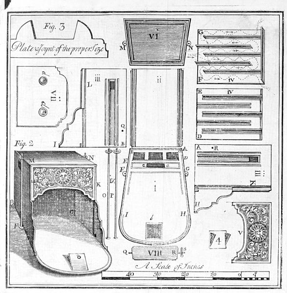

2013-12-30
設計產業大概是最容易與創用CC結合的產業之一了！
設計師們透過分享「點子」，激發彼此的創意和靈感，創造出更多有趣、新穎的作品。在10月中Design Exchange Boston的活動裡，Elliot Harmon以及其他學者們發表了創用CC對於設計產業的重要性。
Elliot Harmon首先指出設計師其實都很了解「分享作品」的重要性，因為在設計這個產業，只有共享資源才能夠讓整體利益最大化。他提到幾個月前 Creative Commons 的 CEO Cathy Casserly在IIT Institute of Design’s Design Strategy Conference中的演講，Casserly在該次演講中提出三個對在場設計師的假設：
1.你/妳成為設計師是因為想要改變事物運作方式(change how things work)
2.你/妳是少數有能力可以改變你/妳員工或客戶工作方式的人
(uniquely able to change how your employers and clients work)
3.你/妳了解分享的價值(the value of sharing ideas with others)
設計師非常擅長去擔任改變的工作，他們常常是公司或組織中帶動創意改造的份子，他們也善於與他人合作，基於這樣的特性，設計師往往能夠引導他們的員工建造出更好的合作團隊。如何能夠做到呢？最好的方法之一就是透過開放授權。
開放授權讓設計師有機會創造一個為其工作的團隊，他不用凡事親力親為，可以讓各個領域的人發揮所長，並對作品的構想和創意貢獻一己之力。這樣不僅增進設計師的工作效率，對於顧客來說，也能讓作品的創意價值提高。
或許有人會擔心將自己的設計開放給他人利用好像是將自己的收益投入大海裡，而被競爭者無條件接收一樣，事實上並非如此。資源共享所帶來的好處往往超過設計者所必須犧牲的利益，以DesigneSmash這間公司為例，它是一間主打設計資源共享的公司，不但擁有各式設計商品的網路商店，還設有一個開放資源的資料分享平台，設計師們可以在上面交換「點子」。根據DesigneSmash的合夥人Enlai Hooi，DesigneSmash沒有理由拒絕設計師們參與它們公司產品的設計，因為這些設計師們往往擁有創作的資源，最了解設計製造的過程如何影響成品的品質，他們的意見是對設計品最重要且完美的回饋。

Benjamin Franklin / Public Domain
另外，像是3D設計軟體公司歐特克(Autodesk)在今年七月也以創用CC授權方式公開它部分支援和教育軟體內容，讓設計師們可以更自由地利用這些軟體內容創造更多有用的資源。全球最重要的創意人才匯集交流網站Behance也是創用CC授權的愛用者，它提供一個平台讓設計師能夠放置、經營自己的作品集，並讓全球企業主和客戶透過這個創意匯集的平台隨時關注、搜尋創意人才和作品。Behance的創辦人Scott Belsky解釋：「我們希望Behance能成為助長創意事業的背後支援，而創用CC授權一直是Behance主要的成長動力和價值。 」透過平台上的創用CC授權，造訪Behance的人可以運用在上面獲得的靈感，創造出更多更有價值的作品，再放到平台上，供他人有限度地利用，形成創意加值的正向循環。
{kind=link}
另一個有趣的例子是義大利著名汽車大廠飛雅特(Fiat)。從2011年開始，飛雅特(Fiat)逐年推出許多款「概念車」(concept cars)，這些概念車是大眾創意的集合體，透過開放徵詢大家對於一部「理想汽車」的意見，飛雅特(Fiat)創造出一部部前衛又不失市場需求的汽車。根據飛雅特(Fiat)的Carl Esposti的說法，雖然公司擁有研發部門，但是在公司外還有非常多擁有不同想法的人，而這些人可能是更適合發表意見的消費者。將這些人的意見納入成為公司資源，可以讓公司擁有更棒的創意，也讓公司能夠更適切地決定如何將這些創意付諸實現。
Elliot Harmon提到的這些例子只是設計產業裡的冰山一角，創意的源流來自共享與加值，在高度需求創意的設計產業中，設計師們如果能夠適度開放自己的設計，不但為自己建構了一個更棒的設計團隊，也有利於更多、更好的設計誕生。
原文：CC in design: expanding your team of collaborators, Elliot Harmon, October 10th, 2013.